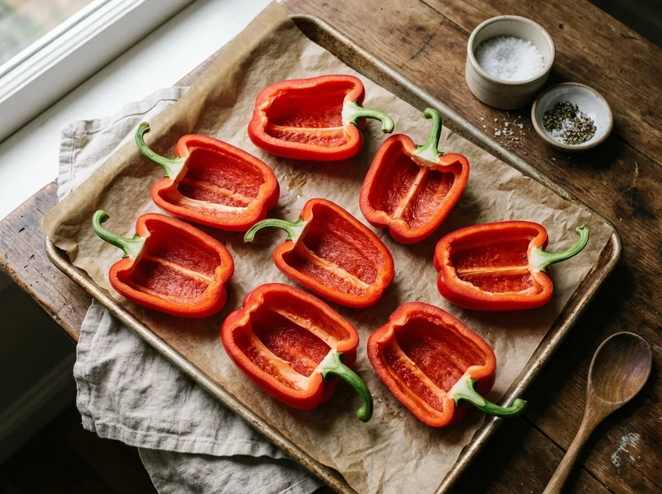
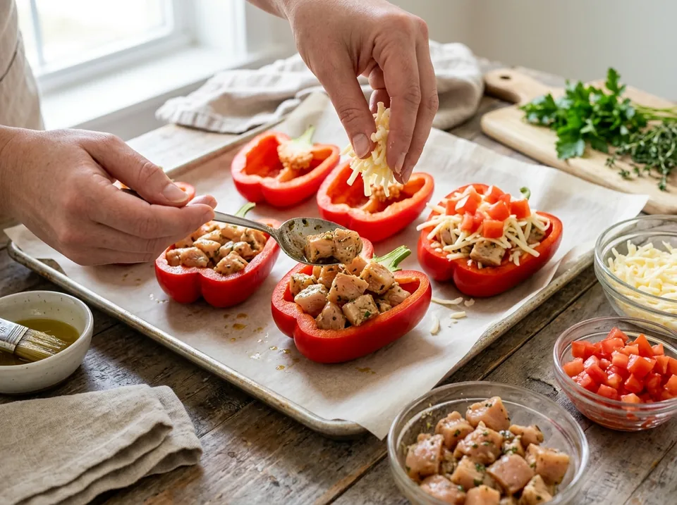
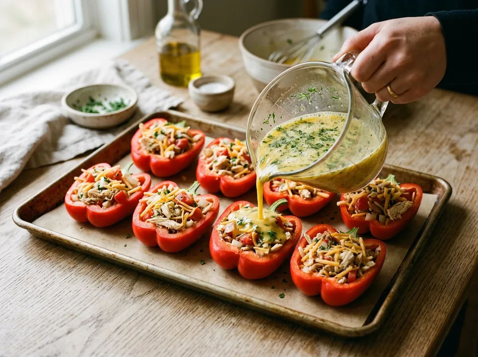

Основные блюда · 50-55 мин
Перцы-лодочки с курицей и сыром
Сочные половинки красного перца с маринованной куриной грудкой, томатами и нежной яичной заливкой под расплавленной сырной корочкой. 238 г чистого белка на противень!
К ингредиентам
Ингредиенты · 5 порций
- Красный болгарский перец (крупный) — 5-6 шт. (10-12 лодочек, ~850 г очищенного)
- Куриное филе (грудка кубиками) — 650 г
- Соевый соус (для маринада) — 2 ст. л. (~30 г)
- Приправа для курицы и соль — по вкусу (для маринования)
- Легкий сыр (тертый, пониженной жирности) — 150 г
- Помидоры свежие (мелкими кубиками) — 2 шт. (~200 г)
- Куриные яйца С1 — 4 шт. (для заливки)
- Соль и специи для заливки (паприка, базилик) — по вкусу
Пищевая ценность
На 100 г: 101 ккал · Б 14 г · Ж 3.4 г · У 3.4 г
Шаг за шагом
Маринование куриной грудки
Куриное филе (650 г) промойте, обсушите и нарежьте аккуратными небольшими кубиками (примерно 1,5×1,5 см). Посолите, добавьте любимую приправу для курицы и 2 столовые ложки соевого соуса. Тщательно перемешайте и оставьте мариноваться в закрытой посуде в холодильнике (на ночь или минимум на 1–2 часа) — соевый соус сделает волокна нежными и сочными.
Подготовка перцев-лодочек
Вымойте 5–6 крупных красных болгарских перцев. Разрежьте каждый перец вдоль пополам прямо через плодоножку (хвостики оставьте — они держат форму и не дают соку вытекать). Аккуратно удалите семена и белые перегородки. Выложите 10–12 половинок-лодочек срезом вверх на противень с пергаментной бумагой.

Выкладывание начинки слоями
Наполните лодочки слоями:
1. Первый слой: плотно выложите на дно кусочки замаринованной куриной грудки.
2. Второй слой: присыпьте курицу частью натертого легкого сыра (примерно 70–80 г, оставшуюся часть оставьте для финала).
3. Третий слой: сверху покройте слоем нарезанных мелкими кубиками спелых помидоров (200 г).
Приготовление и распределение заливки
В глубокой миске соедините 4 куриных яйца, добавьте щепотку соли, паприку или сушеный базилик. Взбейте вилкой до однородности. Аккуратно залейте яичную смесь внутрь каждого перца поверх томатов и сыра.

Запекание в духовке (190 °C, 45 минут)
Отправьте противень в разогретую до 190 °C духовку примерно на 40 минут (заливка схватится в нежное суфле, перцы станут мягкими).
За 5 минут до окончания достаньте противень, посыпьте перцы оставшимся сыром и верните в духовку ещё на 5 минут, чтобы сыр аппетитно расплавился и покрылся золотистой корочкой.
Другие варианты
Осенний вариант в порционных тыквах «Сладкая булочка»
- Порционные тыквы «Сладкая булочка» — 3-4 шт. (6-8 половинок, ~750-800 г съедобной части)
- Куриное филе (грудка кубиками) — 650 г (замаринованная)
- Соевый соус (для маринада) — 2 ст. л. (~30 г)
- Приправа для курицы и соль — по вкусу (для маринования)
- Легкий сыр (тертый, пониженной жирности) — 150 г
- Помидоры свежие (мелкими кубиками) — 2 шт. (~200 г)
- Куриные яйца С1 — 4 шт. (для заливки)
- Соль и специи для заливки (паприка, сушеные травы) — по вкусу